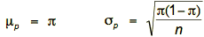
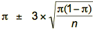
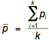
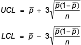
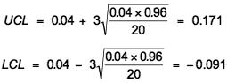
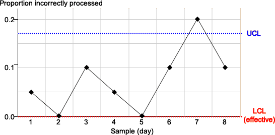

Attributes and defects
A p-chart is used to monitor the proportion of process output that has a certain attribute, such as the proportion of items with defects.
If x items in a sample of size n have the attribute, then x has a binomial distribution and the sample proportion p = x/n has mean and standard deviation:

where π is the population proportion.
Control limits
As in other control charts, the control limits are given by the mean ± three standard deviations,

Since π is unknown, it is estimated from a training period in which the process is in control. If defective proportions p1, p2, …, pk are observed in k samples of size n, our best estimate is

and the control limits are therefore

Example
In a training period, it was observed that 4% of orders were incorrectly processed. A control chart for the proportion of incorrectly processed orders in samples of n = 20 orders has control limits

Since a proportion must always lie between 0 and 1, this means that the lower control limit is effectively equal to 0.
A p-chart for eight further samples of n = 20 orders is shown below:

On day 7 the proportion of incorrectly processed orders (4/20 = 0.2) exceeds the upper control limit, the process is out of control and should be investigated for special causes.